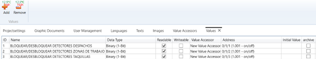

Estructura principal

- Barra superior
- Project
- Start
- View
- Barra lateral izquierda
- Project Explorer
- Documents View
- Barra lateral derecha
- Values
- Toolbox
- Properties
- Document values
- Barra superior
- Project
- Start
- View
- Barra lateral izquierda
- Project Explorer
- Documents View
- Barra lateral derecha
- Values
- Toolbox
- Properties
- Document values
La estructura principal de la aplicación es la siguiente:
Project Explorer
- Project Settings
- User Management
- Languages
- Text
- Images
- Value Accessors
- Scripting
- Graphic Themes
- Graphic Templates
- Scenes
- Tasks
Project Settings
La sección de configuración del proyecto da acceso a todas las configuraciones generales.

Project
En este bloque se encuentran las funciones generales relacionadas con la presentación del contenido del proyecto.
| Guía | Sección | Función |
|---|---|---|
| Project | Modificar nombre del proyecto | Se realiza haciendo clic en el cuadro de texto del nombre del proyecto. |
| Modificar el idioma de inicio del proyecto | Se realiza haciendo clic en el selector de Startup Language y seleccionando una de las opciones. | |
| Modificar el start document del proyecto | Haciendo clic en el selector de Startup Document aparece una lista con los Graphic Documents del proyecto. Seleccionar el documento que se quiere que aparezca al abrir el proyecto con la aplicación inVendi Panel. | |
| Modificar el start document del proyecto | Al hacer clic en el selector de Global Graphics Theme aparece una lista con los Graphic Themes del proyecto. Seleccionar el tema de estilos que se quiere utilizar para el proyecto | |
| Modificar el tema de estilos que utiliza el proyecto | Al hacer clic en el selector de Global Graphics Theme aparece una lista con los Graphic Themes del proyecto. Seleccionar el tema de estilos que se quiere utilizar para el proyecto. | |
| Activar el acceso de cuentas anónimas | Para activar el acceso simplemente marcar la checkbox de Allow Anonymous Acces. |
Location-Based Service
Location-Based Service permite definir la localización del proyecto.
| Guía | Función |
|---|---|
| Location-Based Service | Añadir la localización donde opera el proyecto |
Logging
El bloque funcional Logging permite configurar la comunicación con la base de datos.
| Guía | Sección | Función |
|---|---|---|
| Logging | Definir el tamaño de los segmentos | Permite seleccionar el tamaño de los segmentos entre:1 día, 1 mes, 3 meses, 6 meses y 1 año. |
| Seleccionar el modo de conexión | Permite definir el modo de conexión seleccionando entre: local o TCP. Si se selecciona TCP, se activan los campos de texto de TCP Host y TCP Port. | |
| Definir el tiempo de expiración de los segmentos | Seleccionar el tiempo de expiración de los segmentos entre: infinito, 3 años, 1 año, 6 meses, 3 meses y 1 mes. También se puede activar la copia de seguridad de los segmentos que expiren. | |
| Añadir la ruta de la copia de seguridad | Escribir en el campo Backup Path la ruta donde queremos que se guarde. |
User Management
La sección de gestión de usuarios incluye las funcionalidades relacionadas con la configuración de usuarios.

| Guía | Sección | Función |
|---|---|---|
| Panel | Modificar el nombre de usuario | Haciendo clic encima del nombre de un usuario se puede modificar. |
| Modificar el idioma de inicio del usuario | Haciendo clic encima de la celda de Start Language se abre un desplegable con los idiomas disponibles en el proyecto. Haciendo clic encima se selecciona uno. | |
| Seleccionar la pantalla inicial del usuario | Haciendo clic encima de la celda de Start Document se abre un desplegable con documentos creados en el proyecto. Haciendo clic encima se selecciona uno. | |
| Seleccionar la pantalla inicial del usuario | Haciendo clic encima de la celda de Start Document se abre un desplegable con documentos creados en el proyecto. Haciendo clic encima se selecciona uno. |
Languages
Esta sección permite configurar los idiomas del proyecto.

Añadir idiomas al proyecto
Haciendo clic en se abre una ventana con los idiomas que se pueden añadir al proyecto. Se selecciona uno haciendo clic encima y dándole a OK.
Eliminar idiomas
Seleccionar un idioma de la lista y hacer clic en el botón .
Texts
Esta sección permite configurar los idiomas del proyecto.

Añadir traducciones a los textos
Texto en los varios idiomas
Images
En esta sección se pueden gestionar las imágenes del proyecto.

Añadir imágenes
- Hacer clic en Add. Crear una nueva fila vacía.
- Seleccionar la fila.
- Hacer clic en Assign. Aparece una ventana.
- Seleccionar en el explorador de archivos la imagen.
Eliminar una imagen
Se puede eliminar la fila completa o desasignar la imagen a la fila.
Para eliminar la fila:
- Seleccionar la fila que se quiere eliminar.
- Hacer clic en Remove .
Para mantener la fila y solo desasignar la imagen:
- Seleccionar la fila.
- Hacer clic en Unassign.
Asignar una imagen a una fila
- Seleccionar la fila.
- Hacer clic en Assign . Aparece una ventana.
- Seleccionar en el explorador de archivos la imagen.
Vista previa de la imagen
Al seleccionar una fila, aparece una vista previa de la imagen en la zona inferior de la sección.
Modificar descripción de la imagen
Cada imagen tiene una descripción por idioma. Haciendo clic encima de la descripción de la imagen, nos permite modificarla.
Asignar una imagen a una fila
Si se hace doble clic en una fila se abre el explorador de archivos, permitiendo asignar una imagen a la fila.
Velue Accesors
La sección de value accessors permite ver y configurar los métodos de acceso a los valores del proyecto.
Importar Direcciones de Grupo ETS
Permite importar fácilmente las direcciones de grupo de un proyecto ETS. Para ello:
- Seleccionar una fila con KNX Group Adresses como Accessor Type.
- Seleccionar el botón ETS Groupaddress Import.
- Se abre el explorador de archivos, seleccionar el proyecto ETS donde están las direcciones.
Añadir un acceso de valores
Hacer clic en el icono de Add.
Eliminar un acceso de valores
Seleccionar el acceso que se quiere eliminar y hacer clic en el icono de Remove.
Modificar el nombre del acceso
Se permite editar el nombre haciendo clic encima del nombre del acceso.
Definir el tipo de acceso
Haciendo clic encima del campo aparece una lista de tipos a escoger:
- KNX Group Adresses
- HomeMatic
- OPC Data Access
- Cul
Modificar el nombre del acceso
Permite activar o desactivar la lectura de los valores al iniciar el inVendi Panel.
Modificar la configuración del acceso
Se permite editar el nombre haciendo clic encima del nombre del acceso.
- Hacer doble clic en el campo de la fila.
- Se abre en una ventana el configurador.
- Seleccionar una interfaz en Configured Interfaces o añadir una nueva seleccionando .
Values
La sección de Valores muestra todos los valores importados (desde Value Accessors) y/o valores internos del proyecto.
Añadir valores internos
Para añadir valores internos hacer clic Add . Este variable solo existe en tiempo de ejecución para calculos intermedios.
Eliminar valores
Para eliminar valores seleccionar el valor y luego hacer clic en Remove
Data type
Haciendo doble clic encima se puede seleccionar el tipo de dato del valor. Este campo no debería modificarse y mantener el importado del dispositivo.
Readable
Seleccionar checkbox para habilitar o deshabilitar la lectura del valor. Este valor debe coincidir con lo configurado en el proyecto ETS para su correcto funcionamiento.
Writeable
Seleccionar checkbox para habilitar o deshabilitar la modificación del valor. Este valor debe coincidir con lo configurado en el proyecto ETS para su correcto funcionamiento.
Value accessor
Haciendo doble clic encima se puede seleccionar el acceso del valor por el que se recibe este dato.
Address
Haciendo doble clic encima se puede modificar la dirección de grupo y el tipo de dato del valor.
Añadir un valor inicial al valor
Haciendo clic encima se puede añadir un valor inicial para el valor seleccionado.
Activar el archivado de datos del valor
Seleccionar checkbox para habilitar o deshabilitar el almacenamiento de datos históricos en la base de datos.
Scripting
La sección de Scripting permite configurar Scripts globales para la aplicación.
Funcionalidad
- Añadir un script
- Eliminar un script
- Modificar el nombre del script
- Editar script
Añadir un script
Para añadir un script hacer clic en Add Script .
Eliminar un script
Para eliminar un script hacer clic en Delete Script.
Modificar el nombre del script
Hacer clic encima del campo de File name y escribir el nuevo nombre.
Editar script
Al seleccionar el editar script aparece la siguiente ventana, donde se escribe el código.